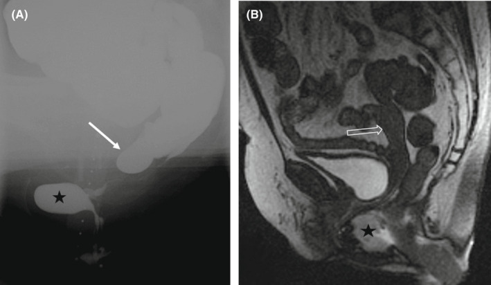

Página 8 · Prolapsos / distopia genital
Retocele ou enterocele? O reto que hérnia × o intestino que desce
Mas uma é o reto que hérnia, a outra é uma hérnia de intestino delgado — origens diferentes, correções diferentes.
Retocele: o reto que herniou pela parede posterior → colporrafia posterior
A retocele é o prolapso da parede vaginal posterior: o reto herniou/desceu e projeta sobre o canal vaginal. A correção é a colporrafia posterior, que refaz a fáscia retovaginal — a fáscia entre o reto e a vagina, cujo enfraquecimento deixou o reto avançar. Frente é bexiga, fundo é reto: a retocele é a assinatura do compartimento posterior.
A regra direta do compartimento: anterior/posterior, cada um sua colporrafia
A lógica do compartimento é limpa, sem mistério: parede vaginal anterior → colporrafia anterior; parede vaginal posterior → colporrafia posterior. E os nomes das fáscias são sugestivos — pubovesicocervical na frente (púbis-bexiga-colo), retovaginal atrás (reto-vagina). O endereço da falha já dita a cirurgia.
Cuidado para não confundir: retocele × enterocele andam juntas
Aqui vem o alerta que mais se repete: cuidado para não confundir retocele com enterocele. É para tomar cuidado mesmo — as duas têm associação frequente e ambas fazem uma bola na parede posterior. Mas são coisas diferentes, com origens diferentes e correções diferentes; trocá-las é o erro que a banca planta.
Enterocele: o intestino delgado que desce pelo fundo da vagina
A enterocele é o intestino delgado que desce pelo fundo da vagina: por movimento de peristalse, a alça vai forçando o fundo de saco e, às vezes, desce por ele. Como vem de cima, alguns autores a consideram um prolapso mais apical (e não posterior puro). E há um sinal ao exame: às vezes se palpa a peristalse da alça — o intestino, ao contrário do reto fixo, se mexe sob os dedos. Reto embaixo, delgado de cima: a origem separa as duas.
Correção da enterocele: fechar o saco herniário
O tratamento da enterocele é, na verdade, mais simples, porque é uma hérnia: empurra-se o intestino de volta e fecha/oblitera o fundo de saco vaginal — desfaz-se o saco herniário para que a força da peristalse não continue empurrando. Retocele se corrige refazendo a fáscia posterior; enterocele se corrige fechando o saco por onde a alça desceu.

Imagem funcional do compartimento posterior: a seta marca a enterocele (alça de delgado descendo pelo fundo de saco) e a estrela, a retocele (a parede do reto projetando). A origem — delgado de cima × reto de baixo — é o que separa as duas na prova.
Pääkkö E et al. “X-ray video defaecography is superior to MR defaecography…” Colorectal Dis. 2022;24(6):747-753 (Fig. 1). Licenciado sob CC BY 4.0. Fonte: PMC.
real de imagem funcional — defecografia (posterior)Mapa do assoalhoHidrata a coluna posterior do mapa (fáscia retovaginal = suporte do reto); e a enterocele, vindo de cima, toca também a coluna apical.
Quiz — fixação
Ao exame da parede vaginal posterior, palpa-se uma bola em que se percebe peristalse, e a impressão é de que o conteúdo vem de cima (do fundo de saco). O diagnóstico e a correção são:
- B — a virada. Peristalse palpável + origem “de cima” = intestino delgado pelo fundo de saco = enterocele → fecha-se o saco herniário.
- A. a retocele é o reto (sem peristalse de alça, vindo de baixo/posterior) e se corrige por colporrafia posterior — a origem descrita não bate.
- C. cistocele é parede anterior/bexiga — compartimento errado.
- D. prolapso uterino é apical com colo descendo, não uma bola posterior com peristalse.
- Por que cair. ambas fazem bola posterior, mas a peristalse e a origem alta são os dois sinais que cravam enterocele — exatamente o que a banca testa.
Sobre retocele e enterocele, assinale a correta:
- B — a virada. Vísceras e correções distintas: reto/colporrafia posterior × delgado/obliteração do saco.
- A. tratá-las como sinônimos é o erro exato que a banca explora.
- C. inverte as correções — retocele não fecha saco; enterocele não é colporrafia posterior.
- D. falso: têm associação frequente (é justamente por isso que se confundem).
- Por que cair. as duas parecem iguais ao olhar (bola posterior), e sem a origem/víscera o aluno as funde.
Mapeados todos os tipos, resta a pergunta que decide operar ou não: quão grande é esse prolapso? A resposta exige a régua — o sistema de coordenadas que assusta na prova e que, desmontado, é pura lógica.